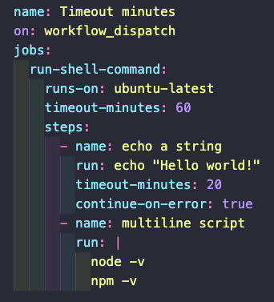

Another key that we can use is the timeout-minutes. It can be added either to a job or to a step. This key controls the maximum number of minutes that the job or step can take. By default this key's value is set to 360. After the alloted time, GitHub will cancel the job.
